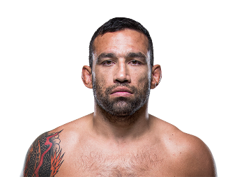

Fabricio Werdum es un peleador brasileño de MMA y especialista en jiu-jitsu brasileño. Nació el 30 de julio de 1977 en Porto Alegre, Brasil. Fue campeón de peso pesado de UFC y conocido por su habilidad para someter a rivales más grandes usando técnicas de grappling y suelo.
Werdum se convirtió en un referente del jiu-jitsu aplicado al MMA, logrando victorias históricas sobre campeones y figuras legendarias. Su estilo combina fuerza, técnica y experiencia, siendo respetado tanto por sus oponentes como por los fanáticos de MMA.

Otros que podrían interesarte: